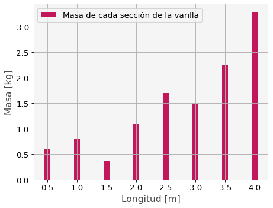
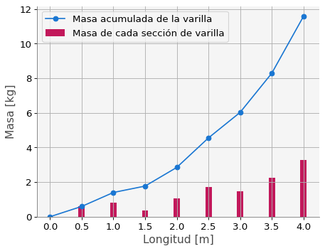
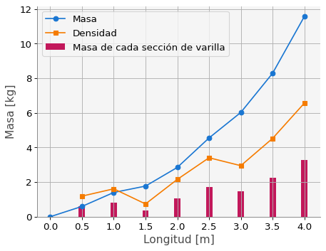
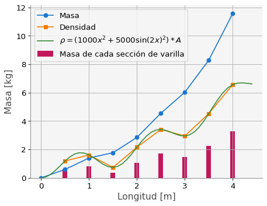
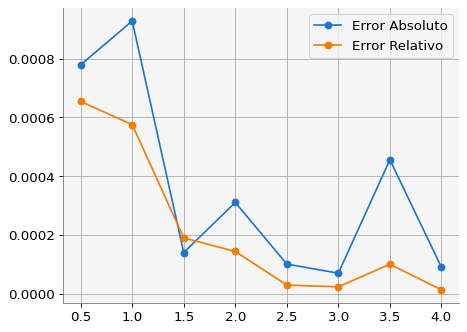
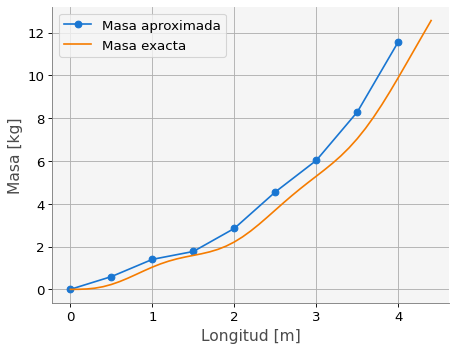

import numpy as np
import matplotlib.pyplot as plt
import macti.visual as mvis
from macti.evaluation import *4 Derivadas numéricas: aplicación
Objetivo general - Entender la utilidad de una derivada y su aproximación numérica en una aplicación simple.
quizz = Quizz("q4", "notebooks", "local")Un experimentado maestro albañil, necesita cortar una varilla de metal en varias secciones para construir una escalera. Realiza las marcas de la varilla y se ven como en la siguiente figura:

Como se observa, el tamaño de cada sección de la varilla es de \(0.5\) m. Por razones de la estructura, se necesita conocer el peso de cada sección de la varilla para evitar que la escalera se derrumbe. El maestro albañil realizó los cortes y pesó cada sección, obteniendo los siguientes resultados:
| Sección | 1 | 2 | 3 | 4 | 5 | 6 | 7 | 8 |
|---|---|---|---|---|---|---|---|---|
| Masa [Kg] | 0.595 | 0.806 | 0.369 | 1.078 | 1.704 | 1.475 | 2.263 | 3.282 |
4.1 Ejercicio 1.
Definir los arreglos de numpy para las secciones de la varilla como sigue:
longitud: para almacenar las marcas hechas en la varillas, comenzando en \(0\) y terminando en \(4.0\).masas_sec: para almacenar el valor de la masa de cada sección.
# longitud = np...
# masas_sec = np...
### BEGIN SOLUTION
# Marcas sobre la varilla de cada sección
longitud = np.linspace(0,4.0,9)
#np.array([0.0, 0.5, 1.0, 1.5, 2.0, 2.5, 3.0, 3.5, 4.0])
# Peso de cada sección [kg]
masas_sec = np.array([0.595, 0.806, 0.369, 1.078, 1.704, 1.475, 2.263, 3.282])
file_answer = FileAnswer()
file_answer.write("1a", longitud, 'Checa el arreglo secciones')
file_answer.write("1b", masas_sec, 'Checa el arreglo masas_sec')
### END SOLUTION
print('Longitud = {}'.format(longitud))
print('Masas = {}'.format(longitud))El directorio :/home/jovyan/macti_notes/notebooks/.ans/DerivadasNumericas/ ya existe
Respuestas y retroalimentación almacenadas.
Longitud = [0. 0.5 1. 1.5 2. 2.5 3. 3.5 4. ]
Masas = [0. 0.5 1. 1.5 2. 2.5 3. 3.5 4. ]quizz.eval_numeric('1a',longitud)----------------------------------------
1a | Tu resultado es correcto.
----------------------------------------quizz.eval_numeric('1b', masas_sec)----------------------------------------
1b | Tu resultado es correcto.
----------------------------------------# Gráfica de la masa para cada sección en forma de barras verticales.
plt.bar(longitud[1:], masas_sec,
width=0.1, color='C3',
label='Masa de cada sección de la varilla')
plt.xlabel('Longitud [m]')
plt.ylabel('Masa [kg]')
plt.grid()
plt.legend()
plt.show()
4.2 Ejercicio 2.
Escribe un código que genere el arreglo de numpy masa con ceros, del mismo tamaño que el arreglo longitud. En la primera posición del arreglo masa deje el valor de cero; en la segunda posición ponga el valor de la masa de la primera sección; en la tercera posición el valor de la primera sección más el valor de la masa de la segunda sección; y así sucesivamente hasta obtener el peso total de la varilla en la última posición. Diseñe un algoritmo para realizar este proceso y escríbalo en la siguiente celda.
# masa = ... # arreglo para almacenar la masa de las secciones
# for ...
# ...
### BEGIN SOLUTION
masa = np.zeros(len(longitud))
for i, ms in enumerate(masas_sec):
masa[i+1] = masa[i] + ms
file_answer.write("2", masa, 'Checa la construcción del arreglo masa')
### END SOLUTION
print('Masa = {}'.format(masa))El directorio :/home/jovyan/macti_notes/notebooks/.ans/DerivadasNumericas/ ya existe
Respuestas y retroalimentación almacenadas.
Masa = [ 0. 0.595 1.401 1.77 2.848 4.552 6.027 8.29 11.572]quizz.eval_numeric('2', masa)----------------------------------------
2 | Tu resultado es correcto.
----------------------------------------# Gráfica de la masa como función de la posición
plt.plot(longitud, masa,
'o-', label='Masa acumulada de la varilla')
# Gráfica de la masa para cada sección en forma de barras verticales.
plt.bar(longitud[1:], masas_sec,
width=0.1, color='C3',
label='Masa de cada sección de varilla')
plt.xlabel('Longitud [m]')
plt.ylabel('Masa [kg]')
plt.legend()
plt.grid()
plt.show()
Si todo se hizo correctamente, se verá que la masa no crece linealmente. Se sospecha que la densidad de la varilla no cambia homogéneamente en toda su longitud. ¿Cómo podemos determinar la densidad de la varilla en cada uno de sus puntos?
| Suponemos que todo está en una dimensión, de tal manera que podemos definir una densidad “lineal” de la siguiente manera: |
|---|
| 3 | Tu resultado es correcto. |
:::
:::
::: {#cell-19 .cell nbgrader='{"grade":false,"grade_id":"cell-fde016e0198c4d2e","locked":false,"schema_version":3,"solution":true,"task":false}' execution_count=18}
``` {.python .cell-code}
# Gráfica de la masa y de la densidad para cada sección
plt.plot(longitud, masa, 'o-', label='Masa')
plt.plot(longitud[1:], densidad,'s-', label='Densidad')
# Gráfica de la masa para cada sección en forma de barras verticales.
plt.bar(longitud[1:], masas_sec,
width=0.1, color='C3',
label='Masa de cada sección de varilla')
plt.xlabel('Longitud [m]')
plt.ylabel('Masa [kg]')
plt.legend()
plt.grid()
plt.show()
:::
Después de una búsqueda sobre las especificaciones de la varilla, se encuentra que la densidad está dada por siguiente fórmula:
\[ \rho = (1000 x^2 + 5000 \sin^2(2x)) A \tag{2} \]
donde \(x\) es la posición en la varilla y \(A\) es el área transversal de la misma. Al medir el diámetro de la varilla se encuentra el valor de \(d = 0.02\) m , por lo tanto el radio es \(r = 0.01\) m.
4.3 Ejercicio 4.
Implemente la fórmula de la densidad \((2)\) en la función calc_densidad(x, A) y evalúa dicha fórmula con los datos del radio antes definido y puntos que están en el intervalo \([0, 4.5]\) separados por una distancia de \(0.1\). Almacena el resultado en la variable ρ. Posteriormente compara gráficamente el resultado con la aproximación realizada en el ejercicio anterior.
r = 0.01
A = np.pi * r ** 2
# def calc_densidad(x, A):
# ...
#
# x = ...
# ρ = ...
### BEGIN SOLUTION
calc_densidad = lambda x, A: (1000 * x**2 + 5000 * np.sin(2*x)**2) * A
#def calc_densidad(x, A):
# return (1000 * x**2 + 5000 * np.sin(2*x)**2) * A
# Puntos donde se evaluá la fórmula de la densidad
x = np.arange(0.0, 4.5, .1)
# Cálculo de la densidad en cada posición del arreglo x
ρ = [calc_densidad(l,A) for l in x]
file_answer.write("4", ρ, 'Verifica que la fórmula (2) esté bien implementada y cada uno de los datos de entrada.')
### END SOLUTION
file_answer.to_file('q4')
print(ρ)El directorio :/home/jovyan/macti_notes/notebooks/.ans/DerivadasNumericas/ ya existe
Respuestas y retroalimentación almacenadas.
[0.0, 0.065140142984144, 0.25077236406386394, 0.5290773824209537, 0.8585968970424002, 1.1907789408649767, 1.4776431688135958, 1.6793558992965574, 1.7705189766656613, 1.7441795815382646, 1.6129279280991666, 1.406909546114531, 1.169065964621893, 0.9483551886937212, 0.7920223069253689, 0.7381405307711528, 0.8096002716097072, 1.0104952481017955, 1.3254761780264852, 1.7221740924437288, 2.156310684160917, 2.578688878846925, 2.9429599713234333, 3.212941066996997, 3.368327565325648, 3.4078988097868033, 3.349710802702375, 3.2282455594876254, 3.0889671566078496, 2.9811439535688815, 2.9500702022640968, 3.0299150805307193, 3.238328130281404, 3.5736527829144573, 4.0151878950714055, 4.526456003996436, 5.060962316838884, 5.569535216116573, 6.00808937693044, 6.344585870417729, 6.564090406147258, 6.671131128203245, 6.688983720799259, 6.65599668952679, 6.619536975529502]quizz.eval_numeric('4',ρ)----------------------------------------
4 | Tu resultado es correcto.
----------------------------------------# Gráfica de la masa como función de las secciones
plt.plot(longitud, masa, 'o-', label='Masa')
# Gráfica de la densidad como función de las secciones
plt.plot(longitud[1:], densidad,'s-', label='Densidad')
# Gráfica de la densidad exacta
plt.plot(x, ρ, label = '$\\rho =(1000 x^2 + 5000 \sin(2x)^2 ) * A $')
# Gráfica de la masa para cada sección en forma de barras verticales.
plt.bar(longitud[1:], masas_sec,
width=0.1, color='C3',
label='Masa de cada sección de varilla')
plt.xlabel('Longitud [m]')
plt.ylabel('Masa [kg]')
plt.legend()
plt.grid()
plt.show()
Para evaluar la aproximación, se puede usar el error absoluto y el error relativo los cuales se definen como sigue.
\[ \begin{eqnarray*} Error_{absoluto} & = & ||v_e - v_a|| \\ \\ Error_{relativo} & = & \dfrac{||v_e - v_a||}{||v_e||} \end{eqnarray*} \]
donde \(v_e\) es el valor exacto y \(v_a\) es el valor aproximado.
4.4 Ejercicio 5. Error absoluto y error relativo.
Implemente las fórmulas del error absoluto y relativo en las funciones lambda error_absoluto(ve, va) y error_relativo(ve, va) respectivamente.
- 5a. Calcular el valor de la densidad exacta con la fórmula (2) para cada sección. Almacene el resultado en la variable
densidad_e. - 5b. Comparar la aproximación (1) con el resultado del inciso 5a usando el error absoluto. Almacene el error en la variable
error_a. - 5c. Comparar la aproximación (1) con el resultado del inciso 5a usando el error relativo. Almacene el error en la variable
error_r.
# error_absoluto = lambda ...
# error_relativo = lambda ...
# densidad_e = ...
# error_a = ...
# error_r = ...
### BEGIN SOLUTION
error_absoluto = lambda ve, va: np.fabs(ve - va)
error_relativo = lambda ve, va: np.fabs(ve - va) / np.fabs(ve)
# Calculamos la densidad en cada sección con la fórmula (2)
densidad_e = calc_densidad(longitud[1:], A)
# Calculamos los errores con respecto de la aproximación
error_a = [error_absoluto(e, a) for e, a in zip(densidad_e, densidad)]
error_r = [error_relativo(e, a) for e, a in zip(densidad_e, densidad)]
#error_a = []
#error_r = []
#for e,a in zip(densidad_e, densidad):
# error_a.append(error_absoluto(e,a))
# error_r.append(error_relativo(e,a))
file_answer.write("5a", densidad_e, '')
file_answer.write("5b", error_a, '')
file_answer.write("5c", error_r, '')
### END SOLUTION
print('Densidad exacta secciones = {}\n'.format(densidad_e))
print('Error absoluto = {}\n'.format(error_a))
print('Error relativo = {}\n'.format(error_r))Densidad exacta secciones = [1.19077894 1.61292793 0.73814053 2.15631068 3.40789881 2.9500702
4.526456 6.56409041]
Error absoluto = [0.0007789408649767626, 0.0009279280991665306, 0.00014053077115283585, 0.00031068416091750706, 0.00010119021319621169, 7.020226409748531e-05, 0.00045600399643586087, 9.040614725819296e-05]
Error relativo = [0.0006541439710135815, 0.0005753066104200283, 0.0001903848458314842, 0.0001440813530256208, 2.969284560492631e-05, 2.3796811358457512e-05, 0.0001007419482335081, 1.3772837006255698e-05]
quizz.eval_numeric('5a', densidad_e)----------------------------------------
5a | Tu resultado es correcto.
----------------------------------------quizz.eval_numeric('5b', error_a)----------------------------------------
5b | Tu resultado es correcto.
----------------------------------------quizz.eval_numeric('5c', error_r)----------------------------------------
5c | Tu resultado es correcto.
----------------------------------------# Gráficas del error absoluto y del error relativo
plt.plot(longitud[1:], error_a, 'o-', label='Error Absoluto')
plt.plot(longitud[1:], error_r, 'o-', label='Error Relativo')
plt.legend()
plt.grid()
plt.show()
Si tenemos la fórmula de la densidad, ecuación \((2)\), podemos encontrar la fórmula para la masa haciendo la integral de la densidad.
\[ m(x) = \int \rho dx = \int (1000 x^2 + 5000 \sin^2(2x)) A \; dx = A \int f(x) \; dx = ¿? \tag{3} \]
4.5 Ejercicio 5. Fórmula exacta para la masa.
- 6a. Cálcula la integral definida en \((3)\) donde \(f(x) = 1000 x^2 + 5000 \sin^2(2x)\) . Escribe su respuesta en la variable
masa_eusando expresiones de Python y funciones de Sympy. - 6b. Posteriormente calcula la masa para cada sección usando el resultado de la integración. Para ello escribe una función lambda con la fórmula de la integral. Almacena el resultado en la variable
m.
Compare el resultado gráficamente con los datos de la masa calculados al inicio.
NOTA. Puede usar Sympy para calcular la integral.
# importamos funciones de sympy para escribir la respuesta.
from sympy import Symbol, sin, cos
# definimos el símbolo x
x = Symbol('x')
# definimos la función original para la densidad
f = 1000 * x**2 + 5000 * sin(2*x)**2
# masa_e = ...
### BEGIN SOLUTION
#from sympy import integrate
#masa_e = integrate(f, x)
masa_e = 1000*x**3/3 + 2500*x - 1250*sin(2*x)*cos(2*x)
file_answer.write("6a", str(masa_e), "Revisa el cálculo de la integral.")
### END SOLUTION
print("Densidad exacta:")
display(f)
print("Masa exacta:")
display(masa_e)El directorio :/home/jovyan/macti_notes/notebooks/.ans/DerivadasNumericas/ ya existe
Respuestas y retroalimentación almacenadas.
Densidad exacta:
Masa exacta:\(\displaystyle 1000 x^{2} + 5000 \sin^{2}{\left(2 x \right)}\)
\(\displaystyle \frac{1000 x^{3}}{3} + 2500 x - 1250 \sin{\left(2 x \right)} \cos{\left(2 x \right)}\)
quizz.eval_expression('6a', masa_e)----------------------------------------
6a | Tu respuesta:
es correcta.
----------------------------------------\(\displaystyle \frac{1000 x^{3}}{3} + 2500 x - 1250 \sin{\left(2 x \right)} \cos{\left(2 x \right)}\)
# Calcula la masa usando la fórmula exacta obtenida anteriormente.
# calc_masa = lambda x: ...
# x = ...
# m = ...
### BEGIN SOLUTION
calc_masa = lambda x: (1000 * x**3 / 3 + 2500*x - 1250 * np.sin(2*x) * np.cos(2*x) ) * A
x = np.arange(0.0, 4.5, .1)
m = [calc_masa(l) for l in x]
file_answer.write("6b", m, "Checa la implementación de la fórmula exacta para la masa.")
file_answer.to_file('q4')
### END SOLUTION
print('Masa exacta = {}'.format(m))El directorio :/home/jovyan/macti_notes/notebooks/.ans/DerivadasNumericas/ ya existe
Respuestas y retroalimentación almacenadas.
Masa exacta = [0.0, 0.002182423384241263, 0.017064851646832385, 0.05544143582414131, 0.1245955116842955, 0.2272489188359526, 0.3612314797824474, 0.519922820911168, 0.6933967815987044, 0.8700877343973358, 1.0387157409844714, 1.1901666040809675, 1.319029996479012, 1.4245528304264585, 1.510857351304525, 1.5863895234025789, 1.6626847955472912, 1.7526461050549453, 1.8686059853195873, 2.0204787276384506, 2.2142943302921436, 2.4513456920843106, 2.7280836897293286, 3.036776704061495, 3.3668304703789333, 3.7065598775737922, 4.045132987924423, 4.374380359569433, 4.6901840194284095, 4.993226798285815, 5.288983724504746, 5.586956835113887, 5.8992742107720435, 6.238874416184963, 6.617562982912055, 7.044247773193793, 7.523631822050594, 8.055570029143981, 8.6351912646101, 9.25376661103931, 9.900186665284211, 10.56281466662354, 11.231422883091394, 11.898906543147781, 12.56250472056554]quizz.eval_numeric('6b', m)----------------------------------------
6b | Tu resultado es correcto.
----------------------------------------# Gráfica de la masa exacta y de la aproximada
plt.plot(longitud, masa, 'o-', label='Masa aproximada')
plt.plot(x, m, '-', label = 'Masa exacta')
plt.xlabel('Longitud [m]')
plt.ylabel('Masa [kg]')
plt.legend()
plt.grid()
plt.show()